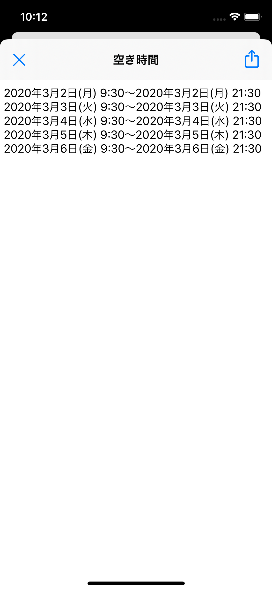
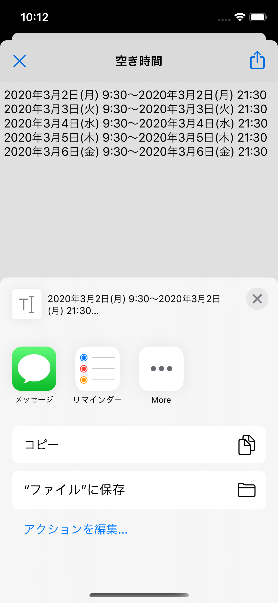
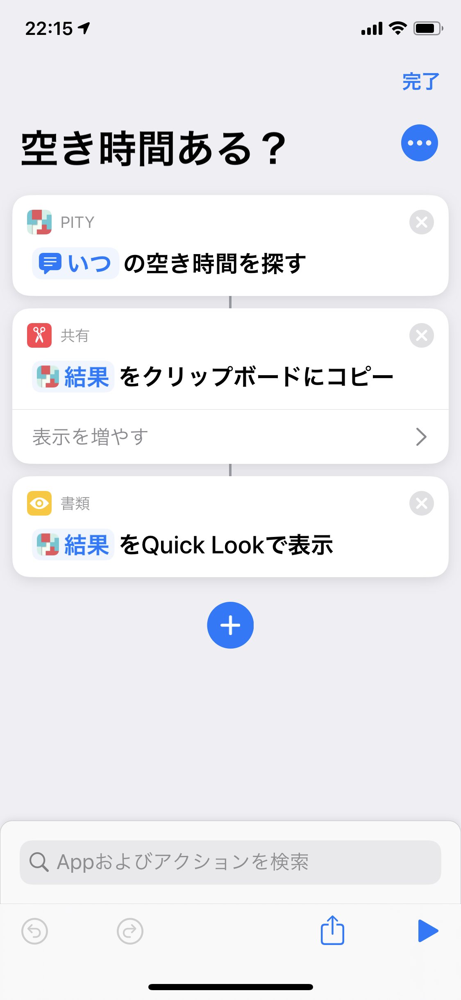
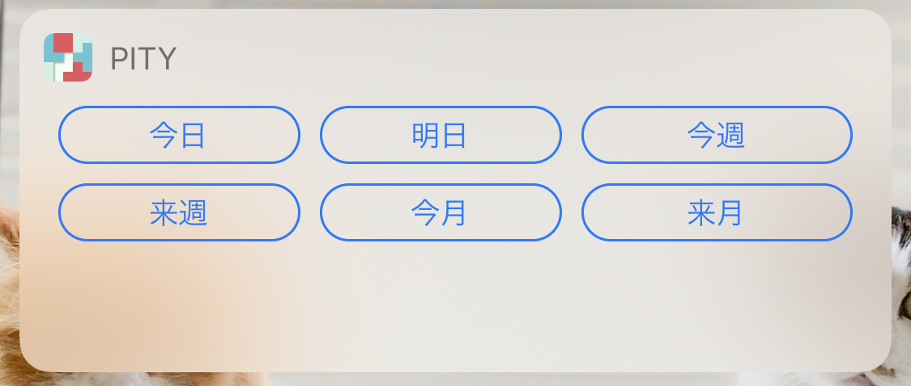

Pity
Pityは自分のカレンダーから空いている時間を見つけ出すためのアプリケーションです。
知人やお仕事などで突然空いている時間を伝える必要が生じた場合などにお使いください。
SiriShortcutと連携することで即座にメールやSNSに貼り付けることもできます。
■使い方



アプリを開くとカレンダーへのアクセス許可が求められますので許可をお願いします。
空き時間を検索したい日付を今日、明日、今週、来週、今月、来月から選択してください。
最低空き時間は必要な空き時間を入力します。こちらに入力した時間以上の空き時間があれば選択されます。
移動時間は実際の予定の場所への移動にかかる時間を入力します。最低空き時間と移動時間を考慮した空き時間が選択されます。
終日予定を無視したい場合は、終日を無視にチェックを入れてください。
休日の予定を無視したい場合は、休日を無視にチェックを入れてください。
最後に検索するボタンをタップすると空いている時間が一覧で表示されます。
右上のシェアボタンから空き時間をコピーしてメールやSNSなどに貼り付けしてお使いください。
■更に便利な使い方


SiriShortcutにPityを登録すると声で空き時間を探すことができます。
検索結果をクリップボードに貼り付けたりそのままメールに添付したりアプリを起動せずに空き時間を調べることが可能です。
Today Extensionにも対応したのでアプリを開かずにさくっと空き時間を探すこともできます。